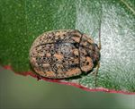
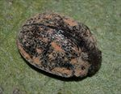
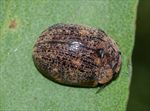
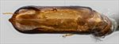
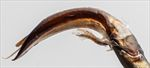
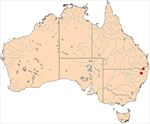

Click on images to enlarge
![Male, Boonoo Boonoo, N.E. NSW [2018-295]](assets/image/Ta165/Ta165_A18-295d.jpg){kind=link}

Male, Boonoo Boonoo, N.E. NSW [2018-295]
![Male, Boonoo Boonoo, N.E. NSW [2017-556a]](assets/image/Ta165/Ta165_A17-556ac1.jpg){kind=link}

Male, Boonoo Boonoo, N.E. NSW [2017-556a]
![Female, Guyra, N.E. NSW [2018-066]](assets/image/Ta165/Ta165_A18-066b.jpg){kind=link}

Female, Guyra, N.E. NSW [2018-066]
{kind=link}

Aedeagus, dorsal view (Boonoo Boonoo, NE NSW, 2017-556a)
{kind=link}

Aedeagus, lateral view (Boonoo Boonoo, NE NSW, 2017-556a)
{kind=link}

Distribution
Name
Trachymela sp. Ta165
Reference specimen
2017-556a, Boonoo Boonoo, NE New South Wales.
Adult Description
Length: ♂ 6.4-7.7 mm (n=4), ♀ 7.5-7.9 mm (n=2).
Colouration:
- Head: Mid- to dark brown, uniform; anterior margin posterior to labrum often infuscate to black; mandibles dark brown with black apices. Antennomeres 1–3 pale brown, 4–7 gradually infuscated, 8–11 dark brown to black.
- Pronotum: Brown, concolorous with or slightly darker than head, shade subuniform; often bearing a pair of dark brown to black oval maculae flanking the midline; small elevated black tubercle occasionally present in foveal area; lateral margins usually partially bordered with black.
- Scutellum: Dark brown to black.
- Elytra: Brown, concolorous with darkest areas of pronotum; humeral calli black; posterior third of suture occasionally black. Punctures concolorous with or slightly darker than interstices. Surface bearing numerous small, elevated black verrucae, mostly irregularly scattered but with 2–3 inconspicuous longitudinal series (the most prominent continuing from a short basal black ridge along verrucal row VR3).
- Venter & Legs: Venter black; abdominal ventrites and distal leg segments occasionally paler; elytral epipleura partially or entirely black.
- Cuticular Wax: Pale brown to orange-brown, distribution distinctly patchy (marginal type). Concentrated on head, pronotal margins (encircling but excluding foveal tubercle), lateral elytral submarginal sulci, and two small basal patches per elytron, with smaller patches aligned along three faint longitudinal discal series; elsewhere sparse and paler.
Morphology:
- Head: Punctures fine (puncture diameter ≈ 1–1.5× eye facet diameter), rarely coarser, dense and slightly unevenly distributed. Antennae short, filiform (AL/BL: ♂ 41–43%, ♀ 32–34%).
- Pronotum: Transversely convex; foveal depression absent or obsolete; foveal tubercle well-defined. Discal surface slightly uneven, nitid; puncturation distinctly impressed, similar in size to or slightly larger than head punctures, dense (interspaces 1.5-2 x pd), becoming noticeably coarser laterally. Anterior angles rounded, sub-rectangular; lateral margins smoothly curved, widest near posterolateral angles.
- Scutellum: Moderately punctate; punctures similar in diameter to adjacent pronotal punctures but shallower.
- Elytra: In lateral view, dorsal curvature gentle and even over anterior half, increasing noticeably posteriorly; anteromedian depression faint. Surface rough; interstices convex and thickened into an irregular reticulate network of dark ridges and small verrucae (some with a fine central puncture). Punctures evenly distributed across disc, obscured by rugose interstices, but smaller and more distinct within a small smooth patch straddling the elytral summit. Humeral callus discontinuous with lateral margin; posterior half of marginal area convex. Vertical epipleural extension relatively small (HCE/PW = 0.32-0.36).
- Venter: Prosternal process narrowest anteriorly, gradually widening posteriorly, closed anteriorly; prosternal process and mesosternum glabrous or with very sparse setae; anterior, median, and posterior trochanters each bearing a single long seta; anterior margin of metaventrite flat, bevelled; inner margin of epipleura lacking setae.
Male Genitalia (Aedeagus):
- Dimensions: Short (LPE/BL = 30-34%), moderately slender (WPE\LPE = 0.25-0.27).
- Dorsal view: Sides subparallel from base, widening at ostium to maximum width across anterior half of ostial opening, then converging evenly to a small, triangular apex. Dorsal surface lightly sclerotised; dorsomedian channel very faint distally; ostium ovate, with paired dorsal ostial processes extending across >75 of the ostial aperture.
- Lateral view: Shaft moderately curved basally, curvature even and gentle distally to apex; apical tip deflexed; flagellum thin, straight.
Immature Stages
Unknown.
Similar species
- Ta21: Small individuals can be exceedingly difficult to separate from Ta165 based on external morphology alone; separation relies definitively on aedeagal characters (detailed in the treatment for Ta21).
- Ta113: Shares a similar body size, marginal wax pattern, and ovate ostium. Differs in possessing a black clypeus, less prominent elytral verrucae, a significantly higher vertical epipleural extension (HCE/PW = 0.39-0.40), and an aedeagus that is stouter and slightly shorter.
- Ta140: Shares the marginal wax pattern and similar dorsal sculpture. Differs in having less pronounced pronotal verrucae and wider elytral margins (HCE/PW = 0.37)<. The aedeagus is ~4% shorter and wider, significantly less curved in lateral view (Curvature Index ~31.5 vs. 40 in Ta165), with an ostium more constricted posteriorly and bearing broader, slightly longer dorsal processes.
- Ta178:
Notes
- Abundance: Uncommonly collected, particularly in comparison to the sympatric and abundant Ta21.
- Host Plants: Recorded from "smooth-barked eucalypts", with verified collection records from Eucalyptus deanei (Symphyomyrtus: Latoangulatae) and E. blakelyi (Symphyomyrtus: Exsertaria).
Copyright © 2026. All rights reserved.